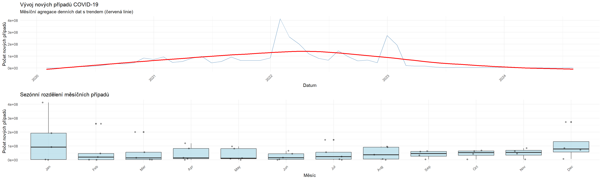

# Grafické zobrazení hlavní řadyp1 <-ggplot(data, aes(x = date, y = new_cases)) +geom_line(color ="steelblue", alpha =0.7) +geom_smooth(method ="loess", color ="red", se =FALSE) +labs(title ="Vývoj nových případů COVID-19",x ="Datum", y ="Počet nových případů",subtitle ="Denní data s trendem (červená linie)") +theme_minimal()# Boxplot podle měsíců pro identifikaci sezónnostidata$month <-factor(month(data$date), labels = month.abb)p2 <-ggplot(data, aes(x = month, y = new_cases)) +geom_boxplot(fill ="lightblue", alpha =0.7) +labs(title ="Sezónní rozdělení nových případů",x ="Měsíc", y ="Počet nových případů") +theme_minimal() +theme(axis.text.x =element_text(angle =45, hjust =1))grid.arrange(p1, p2, ncol =1)
`geom_smooth()` using formula = 'y ~ x'
Dekompozice časové řady
# STL dekompozicestl_decomp <-stl(ts_data, s.window ="periodic", t.window =365)plot(stl_decomp, main ="STL dekompozice časové řady nových případů")

Identifikace trendu pomocí vyhlazení
# Klouzavé průměry různých řádůma_7 <-SMA(data$new_cases, n =7) ma_30 <-SMA(data$new_cases, n =30) ma_365 <-SMA(data$new_cases, n =365) # Exponenciální vyrovnání - jednodušší přístupexp_smooth_model <-HoltWinters(ts_data, gamma =FALSE)# Vytvoříme jednoduché exponenciální vyhlazení pomocí ETSets_model <-ets(ts_data, model ="AAN", damped =FALSE)exp_smooth_fitted <-fitted(ets_model)# Zajistíme stejnou délku (ETS vrací stejnou délku jako originální data)n_obs <-length(data$new_cases)# Pokud je exp_smooth_fitted kratší, doplníme NA na začátekif(length(exp_smooth_fitted) < n_obs) { exp_smooth_full <-c(rep(NA, n_obs -length(exp_smooth_fitted)), as.numeric(exp_smooth_fitted))} else { exp_smooth_full <-as.numeric(exp_smooth_fitted[1:n_obs])}# Grafické srovnání - pouze metody, které mámetrend_data <-data.frame(date = data$date,original = data$new_cases,ma_7 = ma_7,ma_30 = ma_30)# Přidáme ma_365 pouze pokud má dostatek datif(sum(!is.na(ma_365)) >100) { trend_data$ma_365 <- ma_365 }# Přidáme exponenciální vyhlazenítrend_data$exp_smooth <- exp_smooth_fulltrend_plot <- trend_data %>%pivot_longer(cols =-date, names_to ="method", values_to ="value") %>%filter(!is.na(value)) %>%# Odfiltrujeme NA hodnotyggplot(aes(x = date, y = value, color = method)) +geom_line(alpha =0.7, size =0.8) +scale_color_manual(values =c("original"="gray50", "ma_7"="blue", "ma_30"="green", "ma_365"="red","exp_smooth"="purple"),name ="Metoda",labels =c("original"="Originální data", "ma_7"="MA(7)", "ma_30"="MA(30)", "ma_365"="MA(365)", "exp_smooth"="Exp. vyhlazení")) +labs(title ="Srovnání metod vyhlazení trendu",x ="Datum", y ="Hodnota") +theme_minimal() +theme(legend.position ="bottom")
Warning: Using `size` aesthetic for lines was deprecated in ggplot2 3.4.0.
ℹ Please use `linewidth` instead.
# Příprava zpožděných proměnných na základě CCF analýzydata$deaths_lag <-c(rep(NA, 1), data$new_deaths[1:(nrow(data)-1)])data$stringency_lag <-c(rep(NA, 5), data$stringency_index[1:(nrow(data)-5)])data$hosp_lag <-c(rep(NA, 2), data$hosp_patients[1:(nrow(data)-2)])# Model s externími regresoryexternal_vars <-cbind(deaths_lag = data$deaths_lag,stringency_lag = data$stringency_lag,hosp_lag = data$hosp_lag)# Odstranění NA hodnotcomplete_idx <-complete.cases(cbind(data$new_cases, external_vars))ts_complete <-ts(data$new_cases[complete_idx], start =c(2020, 1), frequency =365.25)external_complete <- external_vars[complete_idx, ]# ARIMAX modelarimax_model <-auto.arima(ts_complete, xreg = external_complete)print(summary(arimax_model))
Series: ts_complete
Regression with ARIMA(5,1,1) errors
Coefficients:
ar1 ar2 ar3 ar4 ar5 ma1 drift deaths_lag
-0.0727 -0.2513 -0.3869 -0.3683 -0.2486 -0.7338 0.3368 0.1185
s.e. 0.0389 0.0297 0.0249 0.0279 0.0322 0.0354 0.0781 0.3238
stringency_lag hosp_lag
0.5939 0.0347
s.e. 0.1208 0.1288
sigma^2 = 672.9: log likelihood = -6798.37
AIC=13618.75 AICc=13618.93 BIC=13676.86
Training set error measures:
ME RMSE MAE MPE MAPE MASE ACF1
Training set 0.01279439 25.84287 20.64813 NaN Inf 0.1661069 -0.01453415
# VAR model pro srovnánívar_data <- data[complete_idx, c("new_cases", "new_deaths", "stringency_index", "hosp_patients")]var_data <- var_data[complete.cases(var_data), ]# Optimální lag pro VARvar_select <-VARselect(var_data, lag.max =10, type ="both")print(var_select$selection)
AIC(n) HQ(n) SC(n) FPE(n)
10 7 4 10
optimal_lag <- var_select$selection["AIC(n)"]var_model <-VAR(var_data, p = optimal_lag, type ="both")print(summary(var_model))
Warning: Removed 10 rows containing missing values or values outside the scale range
(`geom_line()`).
Warning: Removed 50 rows containing missing values or values outside the scale range
(`geom_line()`).
Removed 50 rows containing missing values or values outside the scale range
(`geom_line()`).
Removed 50 rows containing missing values or values outside the scale range
(`geom_line()`).